Anacondaのインストール
Python の環境を構築するもう一つの方法として Anaconda を利用することもできます。 Anaconda は Python 自身と Python でよく利用される NumPy や Jupyter といったライブラリをまとめてインストールしてくれるディストリビューション(必要なソフトウェアをまとめてパッケージしたもの)です。ここでは Windows 10 の環境に Anaconda をインストールする方法について解説します。
Anacondaをダウンロードする
Anaconda をインストールするには次の URL へアクセスしてください。
Anaconda は無料で利用可能な Individual Edition と有料で提供されている Team Edition と Enterprise Edition があります。今回は無料で利用可能な Individual Edition を利用します。
画面上部にある「Products」をクリックし、表示されたメニューの中から「Individual Edition」をクリックしてください。
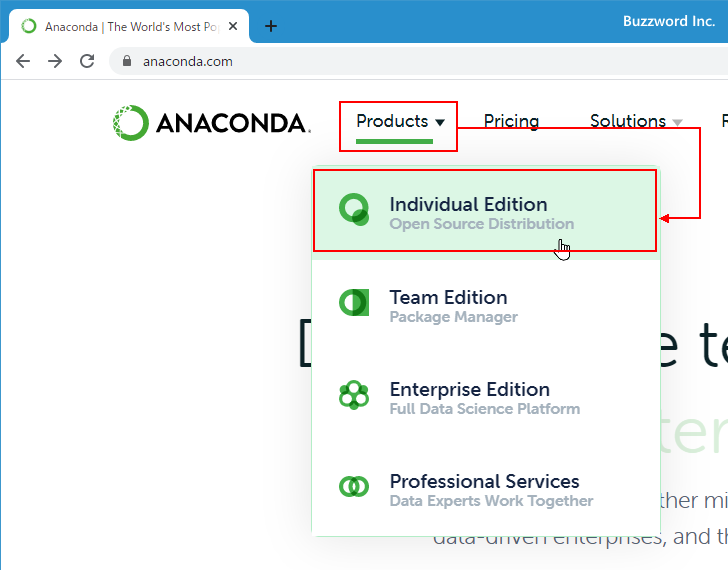
「Individual Edition」の画面が表示されたら「Anaconda Installers」というところまでスクロールしてください。
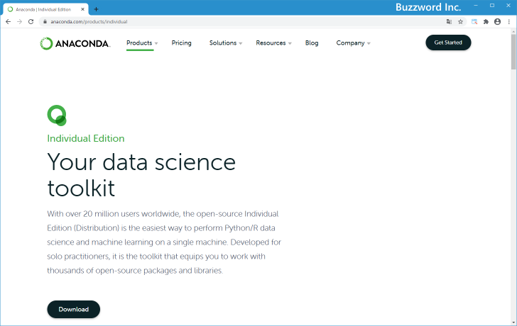
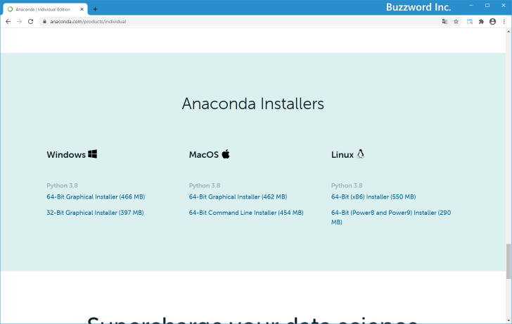
今回は Windows 10 64bit の環境にインストールします。 Windows の下に表示されている「64-Bit Graphical Installer (466 MB)」をクリックしてください。(ご自身の環境に合わせて選択してください)。
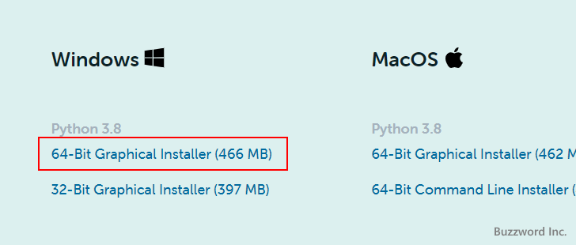
ダウンロードが開始されます。任意の場所に保存しておいてください。(画面には 3 つほど案内が表示されていますが、 Anaconda のインストールとは直接関係ありませんので見ていただいても閉じていただいても構いません)。
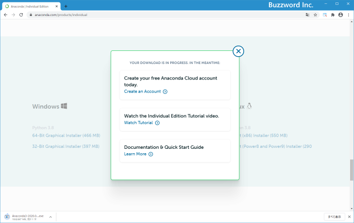
Anacondaのダウンロードはこれで完了です。
Anacondaをインストールする
続いてインストールを行います。ダウンロードしたファイルをダブルクリックして起動してください。次のような画面が表示されたら「Next」をクリックしてください。
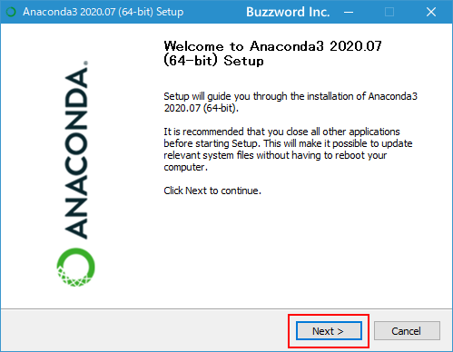
ライセンスが表示されます。よく読んでいただき同意できる場合には「I Agree」をクリックしてください。
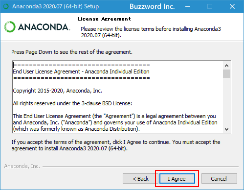
Anaconda を Windows に現在ログインしているユーザーだけで使用する場合は「Just Me」を選択し、すべてのユーザーで利用可能にする場合は「All Users」を選択してください。今回は「All Users」を選択しました。選択が終わりましたら「Next」をクリックしてください。
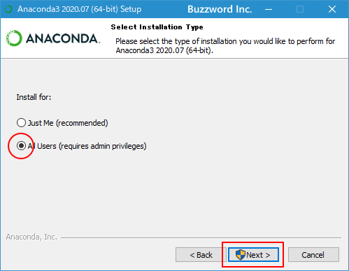
インストールするディレクトリを設定します。今回はデフォルトのままとしましたが、変更する場合は直接編集してください。設定が終わりましたら「Next」をクリックしてください。
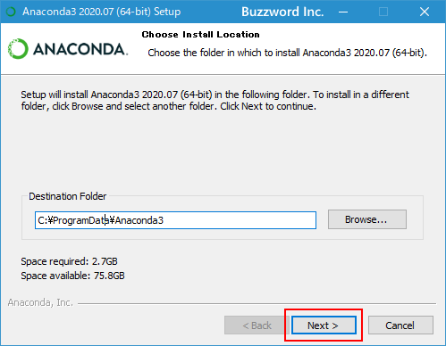
PATH の設定を行う場合は「Add Anaconda 3 to the system PATH environment variable」にチェックを行ってください。 PATH の設定を行わなくても Anaconda 用のコマンドプロンプトなどから Python の利用はできますが、通常のコマンドプロンプトなどから Python のプログラムを実行することはできません(あとから個別に PAHT を設定したり、 Python のプログラムをパスを指定して実行することはできます)。
「Register Anaconda 3 as the system Python 3.8」にチェックを行うと、 Python のデフォルトアプリケーションが Anaconda に設定されます。
今回はデフォルトのままとしました。設定が終わりましたら「Install」をクリックしてください。
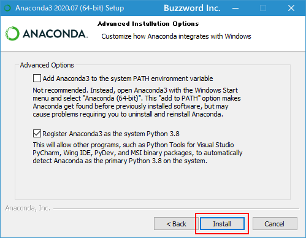
次のような画面が表示されればインストールは完了です。「Next」をクリックしてください。
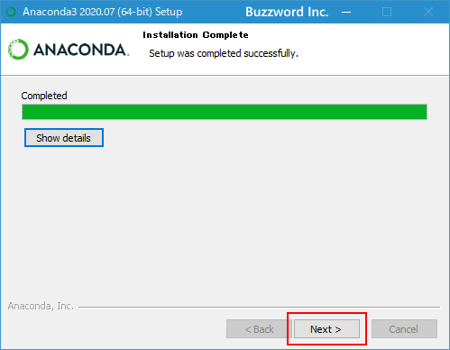
最後に次のような画面が表示されます。「Next」と「Finish」をそれぞれクリックしてください。
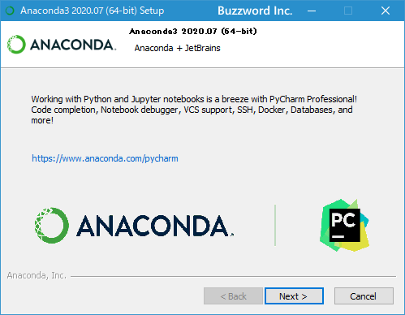
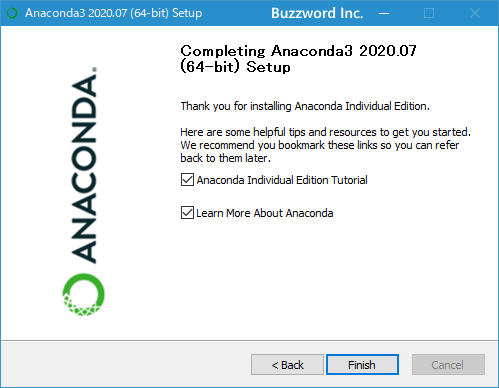
これで Anaconda の Windows 10 環境へのインストールは完了です。
Pythonの動作確認
それでは Python が利用可能になっているか確認してみます。デスクトップ左下にあるスタートボタンをクリックし、表示されたアプリ一覧の中の「Anaconda3」をクリックして下さい。さらに「Anaconda Prompt(Anaconda3)」をクリックして下さい。
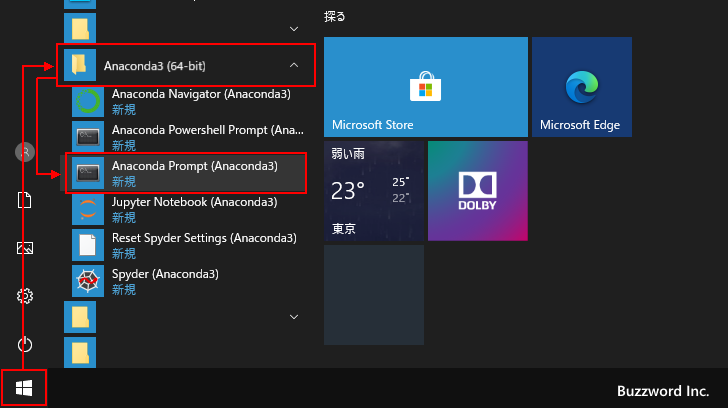
Anaconda 用のコマンドプロンプトが起動します。
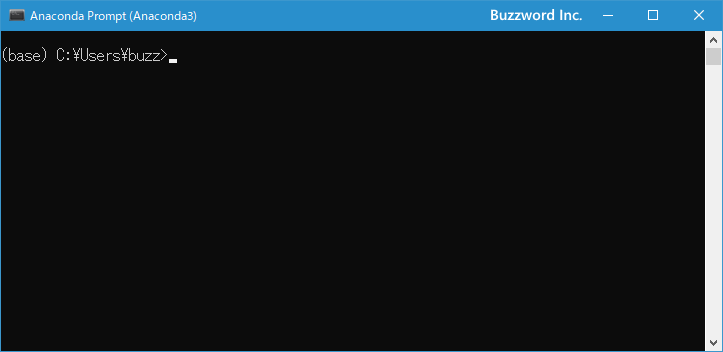
次のように入力したあとで [Enter]キーを押してください。
python
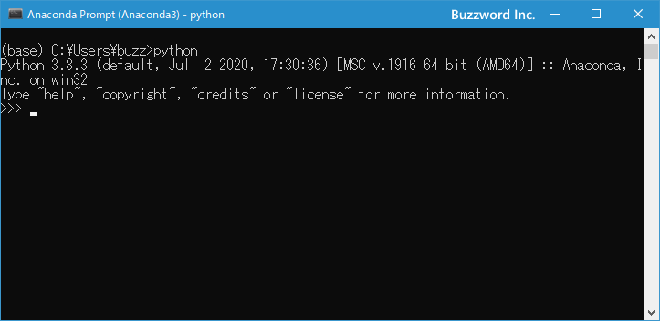
Python が対話モードで起動しました。続いて次のように入力してください。
print('Hello Python')
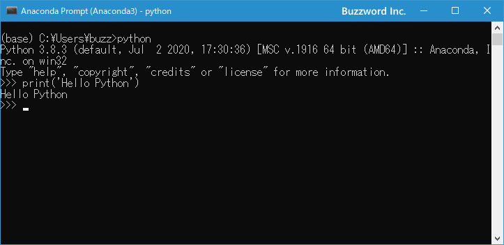
Hello Python と画面に出力されました。
対話モードを終了するには、 Windows 環境の場合は [Ctrl] + [z] キーを押してください。
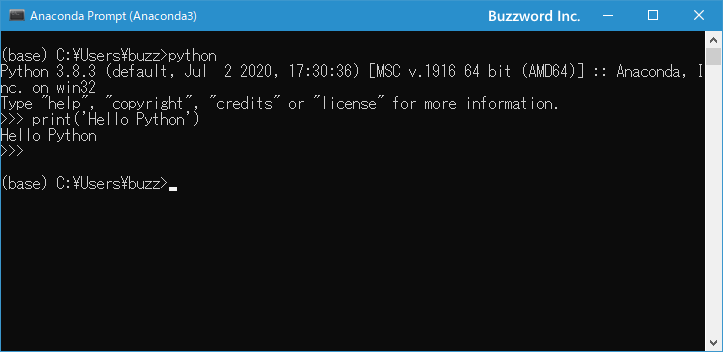
Python が利用できる環境であることが確認できました。
他にも Anaconda をインストールするとブラウザ画面で Python を実行することができる Jupyter Notebook もあわせてインストールされていますので、すぐに利用することができます。( Jupyter Notebook の使い方は別のページで解説します)。
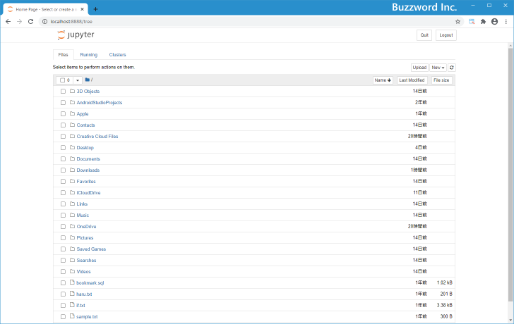
-- --
Windows 10 の環境に Anaconda をインストールする方法について解説しました。
( Written by Tatsuo Ikura )

著者 / TATSUO IKURA
初心者～中級者の方を対象としたプログラミング方法や開発環境の構築の解説を行うサイトの運営を行っています。